Префектура Хоккайдо · озеро Акан · айнская культура
Айнская деревня Акан-ко: резчики, вышивальщицы, театр и лес, который берегут триста лет
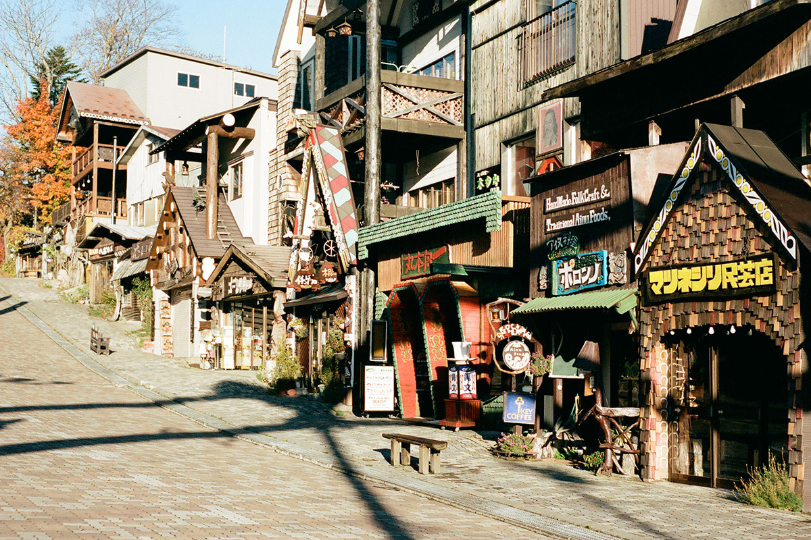
На берегу озера Акан, в восточном Хоккайдо, стоит самая большая айнская деревня острова. Здесь живут и работают резчики по дереву, вышивальщицы, ювелиры, певицы и повара, и почти в каждой лавке хозяин сам делает то, что продаёт.
Деревня
Котан, который подарила «мама»
Онсэн Аканко лежит в национальном парке Акан-Масю, в северной части города Кусиро. Здесь есть озеро, где растут знаменитые маримо, шарообразные водоросли под охраной государства как особый природный памятник, вулканы Мэакан и Оакан, леса и горячие источники. На западном краю курортного посёлка начинается айнская деревня Акан-ко. По-айнски деревня называется котан, и этот котан считается одним из крупнейших на Хоккайдо. В 2020 году здесь жили 36 семей, около 120 человек, и почти все они делали и продавали народное ремесло.
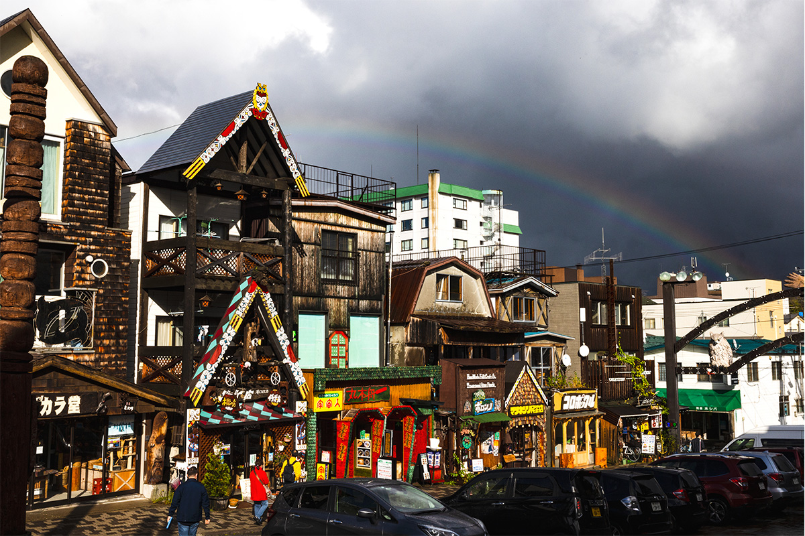
Деревне меньше семидесяти лет. В 1959 году айнам бесплатно отдала свою землю Мицуко Маэда, третья хозяйка поместья «Акан Маэда Иппоэн», которому принадлежали огромные леса вокруг озера. В молодости она выступала в театре «Такарадзука», а на Акан попала, выйдя замуж за второго хозяина поместья. Говорят, её тяготило, как живут айны, работавшие за гроши, и она решила дать им место для собственной деревни. В котане её звали «хапо», то есть «мама».
Сюда съехались айны из Кусиро, Асахикавы, Саппоро, Обихиро и других мест. Один из местных резчиков называет здешних айнов гибридом: в деревне смешались разные обычаи, поэтому обновлять традицию тем, что под рукой, здесь считают делом обычным. Об аканских айнах и говорят, что среди айнов у них особенно передовой нрав.
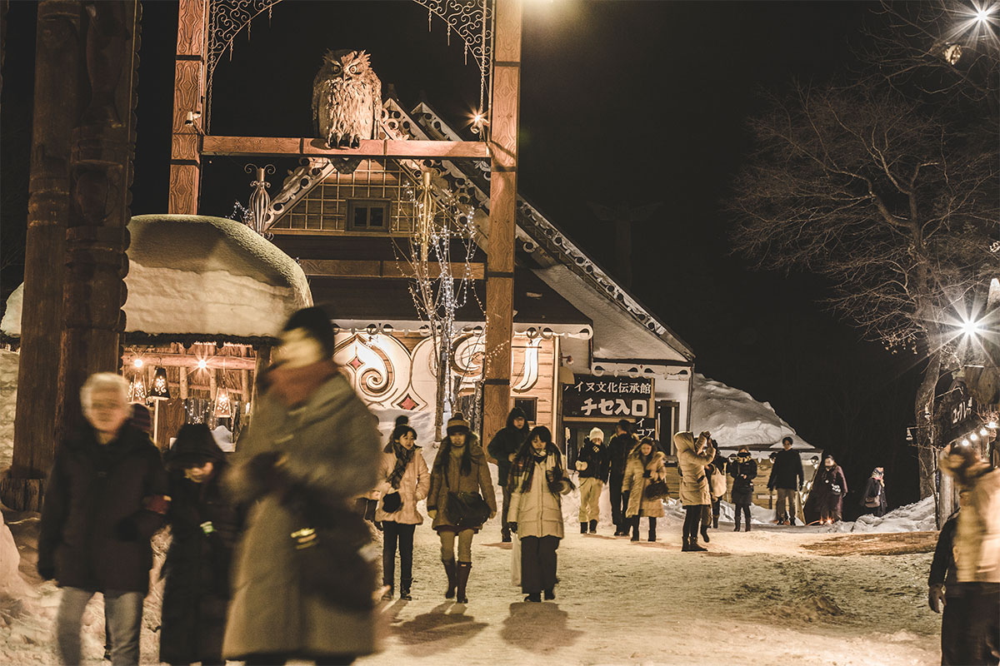
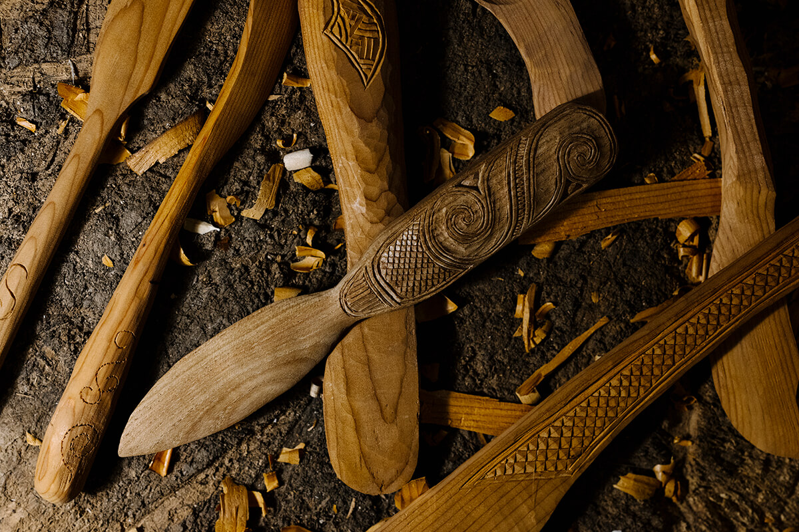
Айны верили, что душа есть у всего на земле: у зверей и растений, которые дают человеку пищу, у погоды, огня и воды, которые человеку неподвластны, и даже у инструментов. Всё это они почитали как камуй. Слово переводят как «божество», но камуй не стоит над человеком: это равный ему собеседник, и от отношений с камуй зависело всё айнское понимание природы. Поэтому ремесло здесь не сувенир, а продолжение быта. В лавках продают резное дерево и ткани с айнской вышивкой, а за прилавком часто сидит тот, кто их сделал.
«Самое интересное в нашей деревне то, что мастера соревнуются: никто не хочет проиграть и никто не повторяет другого. По-настоящему хорошие вещи лежат в лавках, так что ходите по ним, как будто ищете клад»
резчик, один из создателей музея «Оннэ-тисэ»
Фонд
Маэда Иппоэн: вернуть лесу его возраст
Название поместья «Маэда Иппоэн» взято из девиза его основателя, Масаны Маэды (1850–1921): «В любом деле важен один шаг». Маэда был государственным деятелем эпохи Мэйдзи и первым хозяином поместья на Акане. Шаг за шагом, по этому девизу, здешние леса и сберегли.
Мицуко Маэда умерла в 1983 году. Её дом с тех пор хранит фонд «Маэда Иппоэн», в который превратилось поместье, и внутри всё оставлено так, как было при ней. Фонд владеет большими лесами вокруг озера и ухаживает за ними.
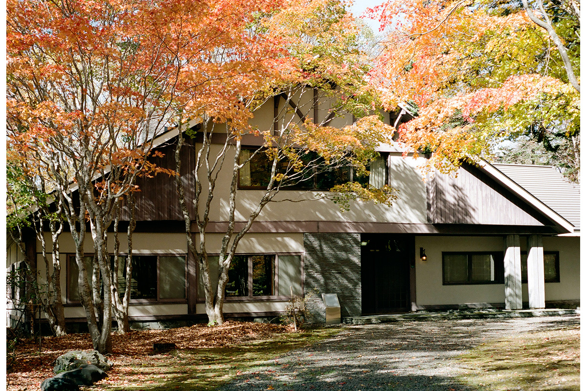
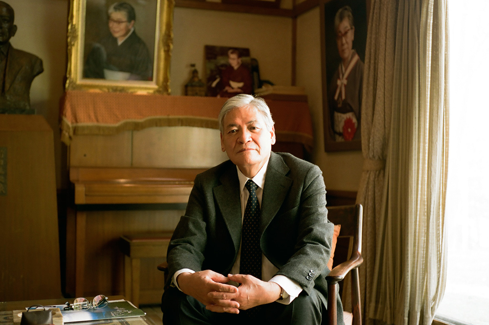
По словам председателя фонда, Мицуко Маэда хотела беречь прекрасные леса Акана и вместе с местными жителями построить хороший посёлок. Когда в Акан приезжали компании из Токио с планами курортной застройки, она так и не согласилась ни с одной из них встретиться.
«Наша большая цель: вернуть лес к тому виду, каким он был триста лет назад. Здесь уже прошёл человек, и девственным лес не станет. Но двести и триста лет вперёд мы должны беречь его в том духе, в каком берегла его Мицуко Маэда»
председатель фонда «Маэда Иппоэн»
Резьба
«Итингэ»: лавка, где под потолком висит память семьи
В лавке «Итингэ» продают резное дерево и сувениры, а с потолка свисают странные вещи без ценников: рыбья голова, выцветшие фотографии, сушёные гвоздики, закопчённые часы, бейсбольная бита, походный котелок, черемша, маска для плавания. Их развесил прежний хозяин, известный айнский резчик. Он умер в 2017 году, и лавку унаследовал его старший сын, тоже резчик.
«Каждая из этих вещей хранит память о нашей семье. Мне не хотелось, чтобы после смерти отца лавка исчезла, поэтому я взялся за семейное дело»
хозяин лавки «Итингэ»
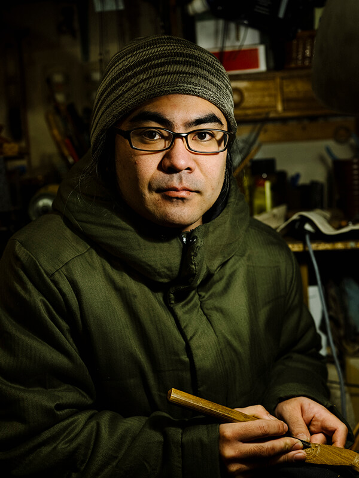
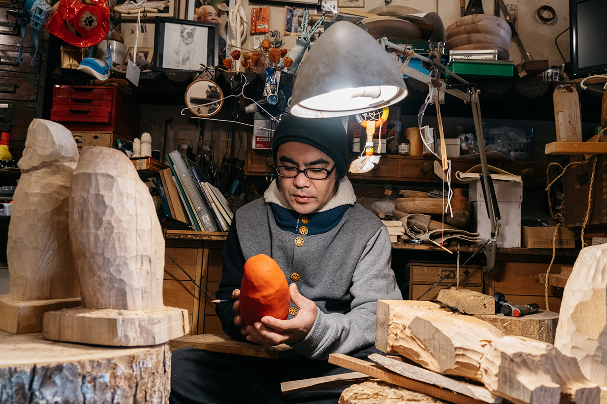
Он вырос в доме при лавке и с детства смотрел, как работает отец. В Австралии он увидел, как из куска дерева вырезают и раскрашивают фигурки птиц, и тогда заинтересовался резьбой, которая была у него в крови. После возвращения работал на ферме, но всё-таки тянуло резать самому, и он вернулся домой. Всерьёз за резьбу он взялся уже после смерти отца.
«Отец говорил: режь что хочешь. Учил он только точить инструмент. Сначала я показывал ему заточенные ножи, а он: вот тут плохо, и тут плохо. Когда он перестал что-либо говорить, я понял, что наконец получилось»
хозяин лавки «Итингэ»
Многие айнские вещи сначала были обычной утварью, и на неё наносили тонкий узор. По мнению мастера, узор был знаком достатка: если у человека есть время вырезать мелкие детали, значит, жизнь у него богатая. Он режет и утварь с айнским орнаментом, и сов с медведями. Для айнов эти звери были камуй, и в фигурках живёт вера в то, что душа есть у всего. Сов вырезал ещё отец, поэтому к ним у сына особое отношение. Он пробует разные породы дерева и красит работы искусственным лаком. Режет и масляные ножи, которых в айнской культуре не было, с айнским узором в собственной переделке.
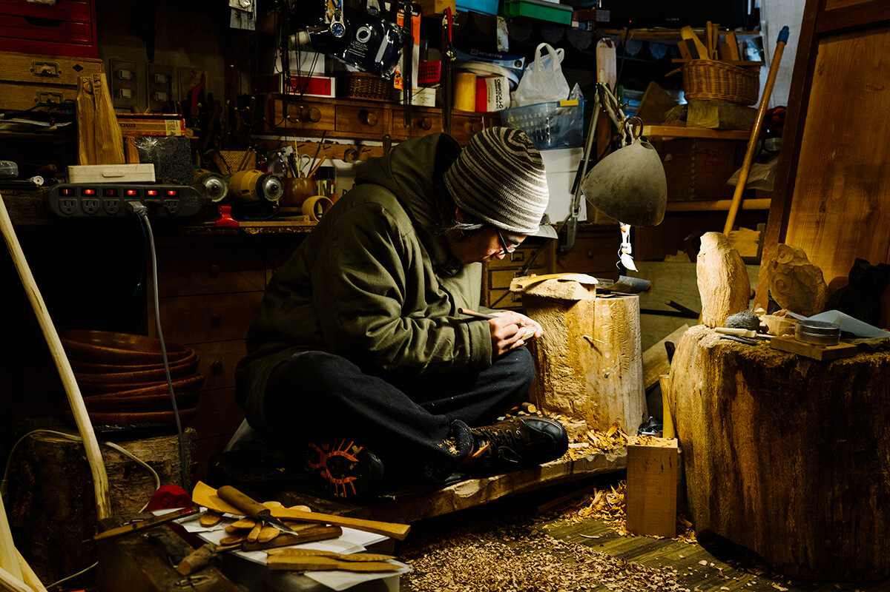
«Когда в голове появляется вещь, которую хочется вырезать, я до сих пор откладываю ради неё заказы»
хозяин лавки «Итингэ»
Лучшее для него, когда в лавку возвращаются старые покупатели. Дерево трескается, и люди до сих пор приносят чинить вещи, сделанные отцом. Это он считает своим долгом и не поручает никому другому.
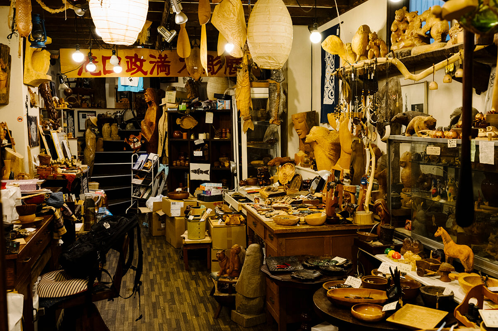
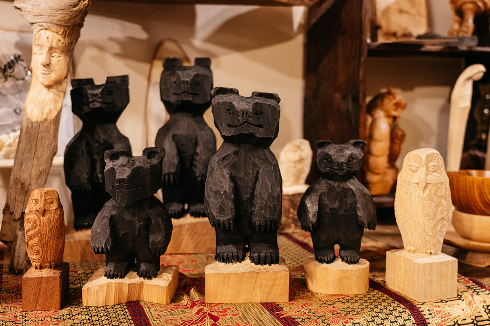
Хозяин «Итингэ» учит айнский язык, участвует в обряде камуй-номи и работает гидом по айнской культуре. Из языка, говорит он, становятся понятны названия мест. Айнскую утварь чаще всего делали из багрянника, а по-айнски это дерево называется «ранко». Посёлок Ранкоси к западу от Саппоро получил имя от зарослей багрянника.
«Айны считают, что дерево не растёт из земли, а держит её. Наверное, они знали, что если вырубить лес на горе, сойдёт сель. Даже на таком примере видно: айнов нельзя отделить от природы»
хозяин лавки «Итингэ»
Осенью 2022 года он водил гостей по «Лесу света», участку, который охраняют, чтобы вернуть ему облик трёхсотлетней давности. В конце прогулки он рассказывал, как в юности бунтовал против айнской культуры и о том, что изменило его отношение.
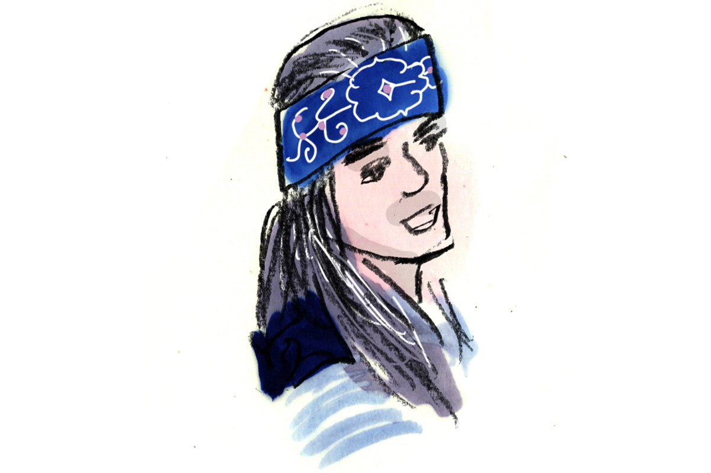
«Итингэ»
- Адрес
- префектура Хоккайдо, Кусиро, Акан-тё, Аканко-онсэн, 4-7-10
- Телефон
- +81 154-67-2816
- Часы работы
- 8:00–22:00
- Выходные
- нерегулярно
Вышивка
«Тинита»: вышивка, в которой живёт история
Айнская вышивка покрывает одежду узором, похожим на лабиринт. Хозяйка лавки «Тинита» родилась в 1948 году на Хоккайдо и выпустила несколько альбомов о вышивке. Она входит в число мастеров, отмеченных за выдающееся ремесло, учит молодых и делает копии старых работ, чтобы сохранить их для потомков.
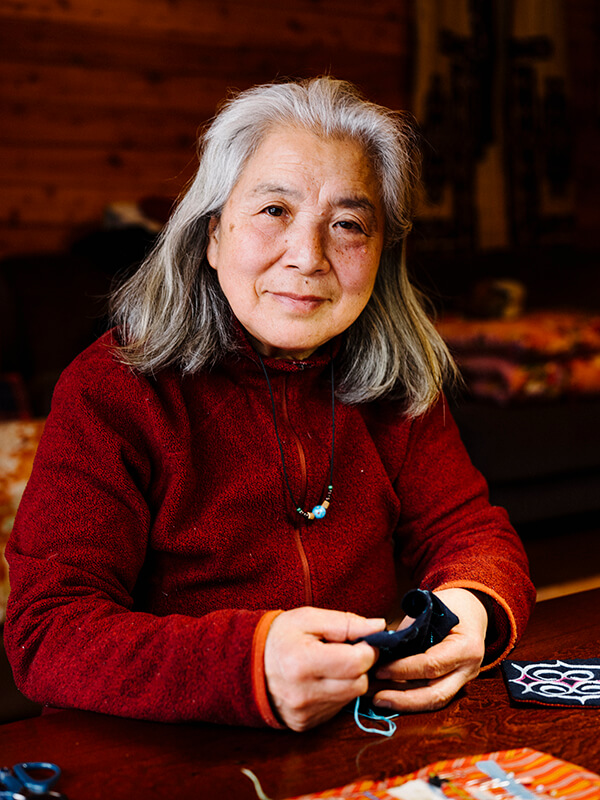
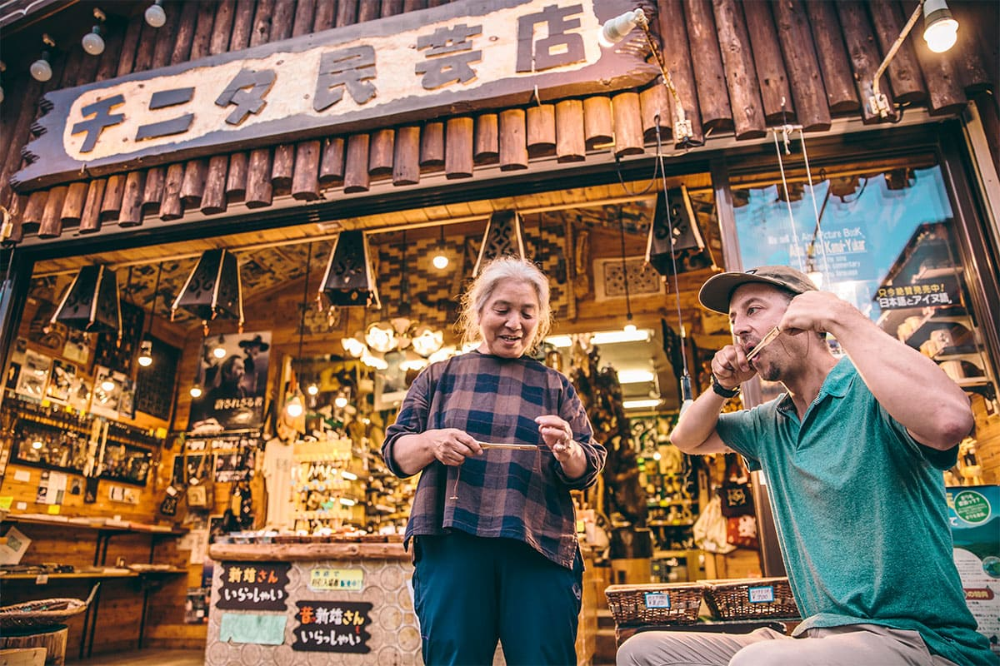
С айнской культурой она поначалу никак не была связана. Работала конторщицей в рыболовецком кооперативе на Акане и вышла замуж за айна, хранителя традиций. Свекровь попросила помочь сшить налобную повязку «матанпуси», и с этого всё началось. Многому её научили свекровь и соседка, известная наставница айнской культуры: как шить одежду, как собирать горные травы.
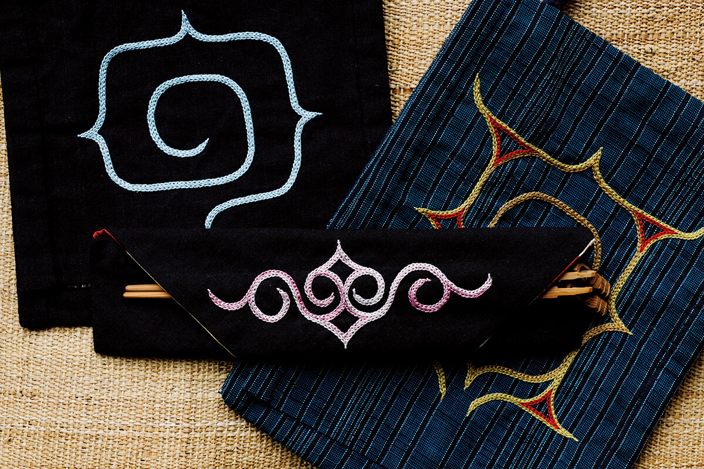
Основа айнской вышивки складывается из двух мотивов: колючего «айуси» и плавной кривой «морэу». К ним каждая мастерица добавляет своё, и так получается единственная в мире одежда. Раньше всё шили из природных материалов, из внутренней коры деревьев и крапивы. Копируя старые вещи, хозяйка «Тинита» берёт те же материалы. Исследователь айнской культуры объяснил ей, что дерево по-айнски называется «сирикоро-камуй», это божество, которое корнями держит землю, и раз уж берёшь часть божества, к материалу нужно относиться бережно.
«Когда сам делаешь нить, понимаешь, что чувствовали люди прошлого. В старой одежде даже по одной кривой видно характер мастерицы. Видишь мягкую линию и думаешь: наверное, добрый был человек. Поэтому я и сама берусь за иглу, только когда на душе спокойно»
хозяйка лавки «Тинита»
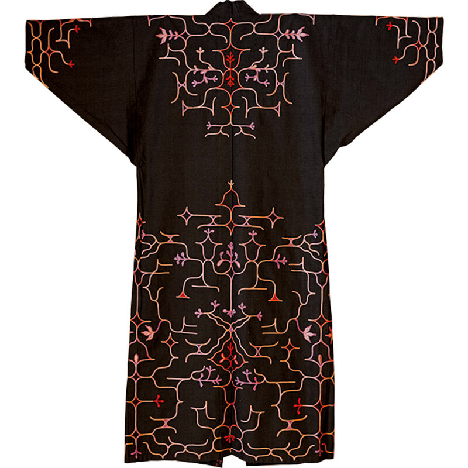
Любимая её копия повторяет халат одной айнской мастерицы прошлого. Долго было непонятно, что значат красные участки узора. Однажды, проезжая на машине вдоль озера, хозяйка увидела, как краснеют цветы сосны, и поняла, что узор изображает именно их. Часть её копий в 2020 году готовили для показа в Упопое, национальном центре айнской культуры в Сираой (о нём отдельная статья).
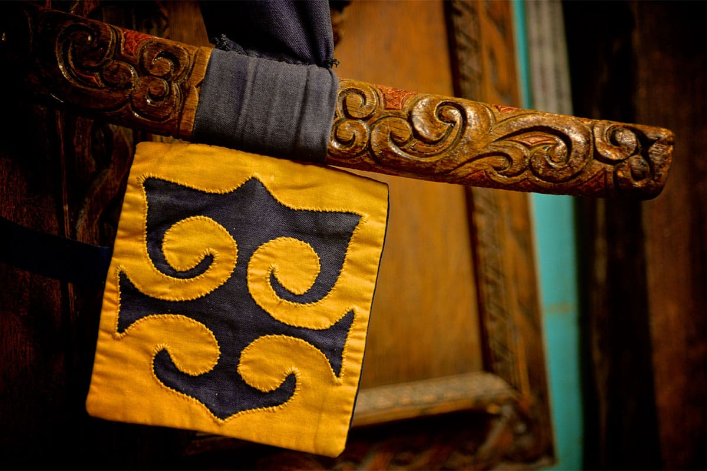
«Тинита»
- Адрес
- префектура Хоккайдо, Кусиро, Акан-тё, Аканко-онсэн, 4-7-25
- Телефон
- +81 154-67-2413
- Часы работы
- 8:00–22:00
- Выходные
- нерегулярно
Музей
«Оннэ-тисэ»: большой дом айнского искусства
«Оннэ-тисэ» по-айнски значит «большой дом». Когда-то это был театр айнского танца. В 2012 году в деревне открылся театр «Икор», и «Оннэ-тисэ» стал музеем работ старых и новых мастеров котана. После перестройки он вновь открылся в ноябре 2020 года как центр передачи и создания айнской культуры: с выставкой, занятиями по резьбе и новой сценой, где проходят танцы и обряд камуй-номи.
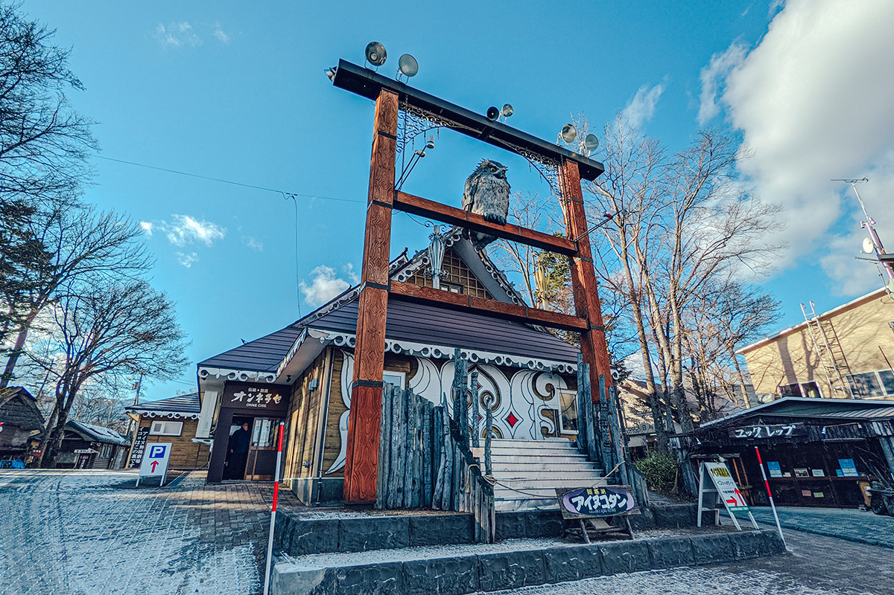
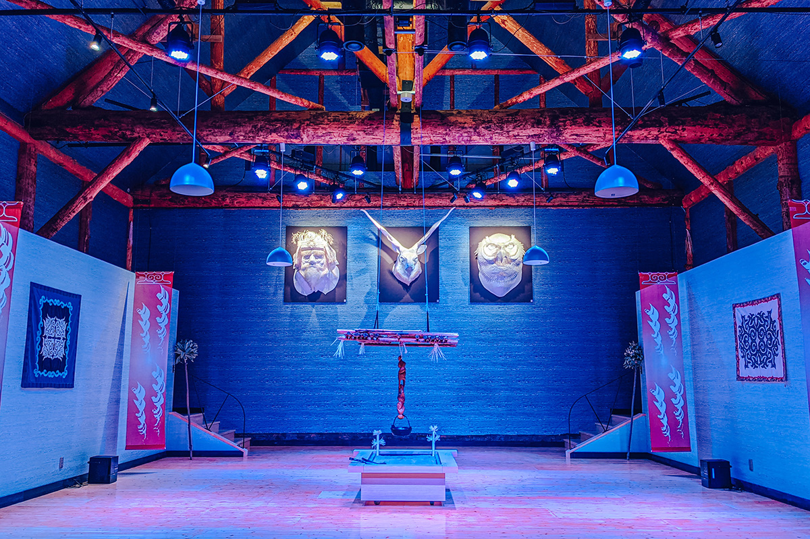
За стеклом лежат халаты «руунпэ» и «тидзири», которые передавали в семьях здешних айнов, украшения, резные палочки «икупасуй» для обрядов, подносы «ита» и редкие украшения из камней, добытых торговлей. Директором обновлённого музея был резчик, родившийся в Аканко. В 13 лет он увидел, как жители деревни играют айнскую драму по юкар, и решил жить как айн. После школы он пошёл в ученики к отцу, одному из главных создателей котана. Он продюсер театра «Икор», ставит «Огненный праздник иоманте», поёт и снимается в кино: в фильме «Айну мосир» (2020) он сыграл одну из главных ролей.
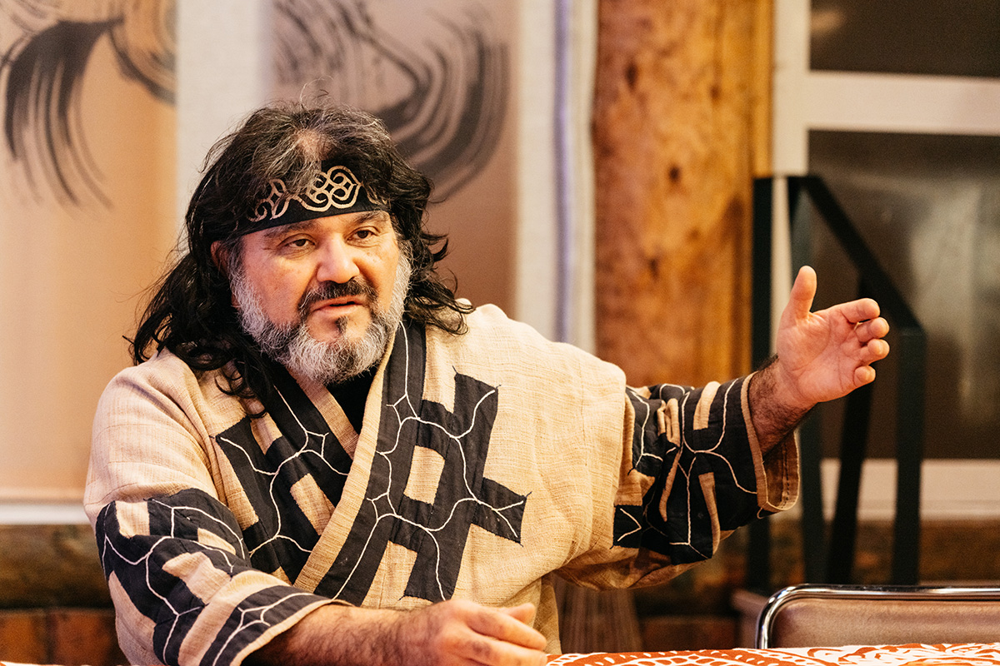
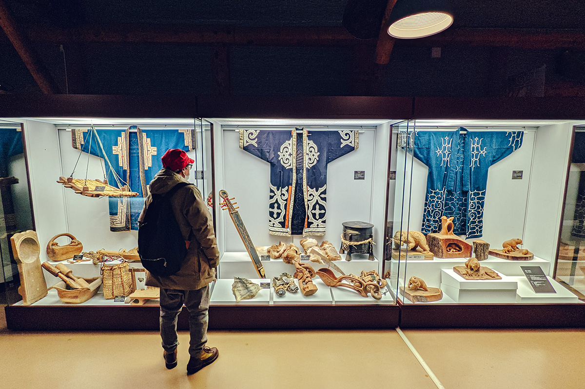
В фильме речь шла об иоманте, обряде, в котором выращенного в деревне медвежонка отправляют обратно в мир богов.
«И медведь, и сова для нас камуй. Считается, что каждый спускается из мира богов на землю со своей задачей. Поэтому его надо как следует угостить и отправить обратно, чтобы он рассказал богам, как хорошо на земле, и снова пришёл в гости. Настоящего иоманте не было больше сорока лет. Лет десять назад я держал за лавкой медвежонка, хотел провести обряд. Но семья была против, да и многое случилось. Я понял, что камуй меня не звал и это не моё дело»
директор обновлённого «Оннэ-тисэ»
«Если у тебя есть основа традиции, что бы ты ни делал, не собьёшься. Но мы делаем не просто „традицию“. Мы на неё опираемся, но не хотим быть ею связаны. Когда делаешь традиционную вещь, это молитва. Всё остальное мечта»
директор обновлённого «Оннэ-тисэ»
С 1 по 31 октября 2026 года «Оннэ-тисэ» закрыт: зал сдан под мероприятия, а следующий сезон начнётся 1 мая 2027 года.
«Оннэ-тисэ»
- Адрес
- префектура Хоккайдо, Кусиро, Акан-тё, Аканко-онсэн, 4-7-19
- Телефон
- +81 154-67-2727 (кооператив айнских ремёсел Акана)
- Часы работы
- суббота, воскресенье и праздники, 9:00–17:00
- Цены / Вход
- со средней школы 500 иен, младшие школьники 250 иен, дошкольники бесплатно
Театр
«Икор» и «Юкара-до»: юкар в цифровом свете
В театре «Икор» показывают традиционный айнский танец, «Огненный праздник иоманте» и спектакль Lost Kamuy. В нём старинный танец соединён с современным, с трёхмерной графикой и объёмным звуком. Сюжет построен вокруг эдзоского волка, которого человек истребил на Хоккайдо ради собственного удобства. Волк в спектакле стал символом уходящей природы, а через его историю видно, с каким почтением айны относились к камуй. Главная мысль простая: среди того, что дано небом, нет ничего лишнего.
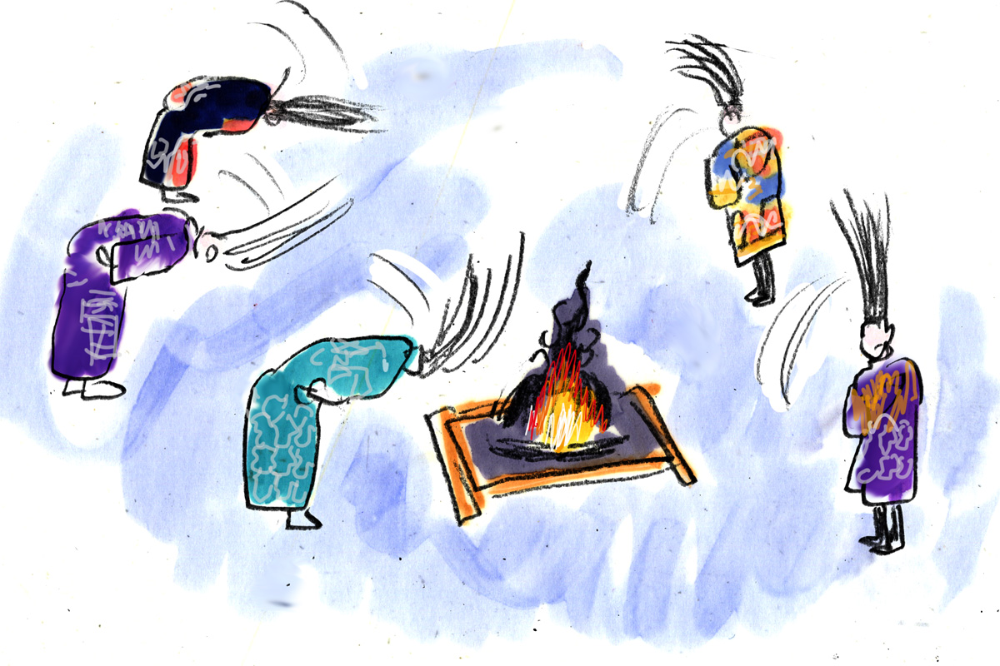
Режиссёр театра родился в Аканко, учился дизайну в Саппоро, уехал в Токио, а потом вернулся домой. Его отец был резчиком и режиссёром деревенского театра. Сын держит основанную отцом лавку резьбы «Юкара-до» и сам режет айнские подносы «ита». С этой семьёй связана и такая история: в Аканко не раз приезжал Фудзио Акацука (1935–2008), один из самых известных авторов японской манги, и он дружил с отцом нынешнего хозяина.
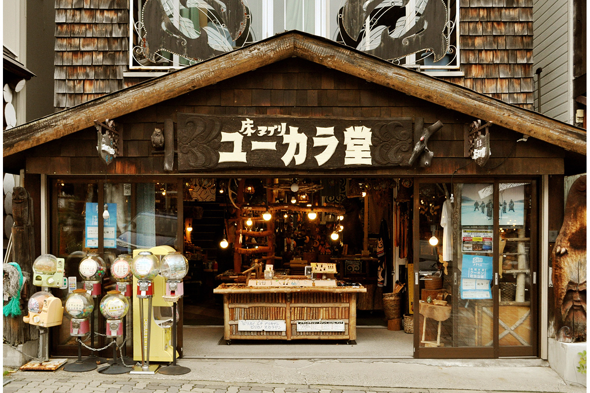
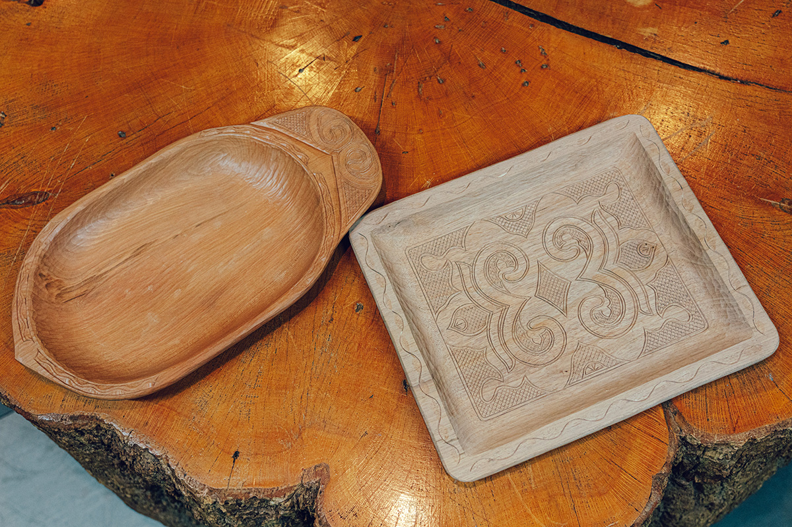
Руководить сценой «Икор» он начал около 2013 года. Сначала не всё получалось, не хватало знаний. Тогда он вместе с видеохудожниками и музыкантами задумал Lost Kamuy, и спектакль стал главной постановкой театра и получил признание далеко за пределами Хоккайдо.
«Раньше деревня обычно заказывала художникам: хотим вот такое. Ни разу то, что получалось, меня не удивило. А Lost Kamuy вышел далеко за пределы того, что я представлял, и я сам удивился»
режиссёр театра «Икор»
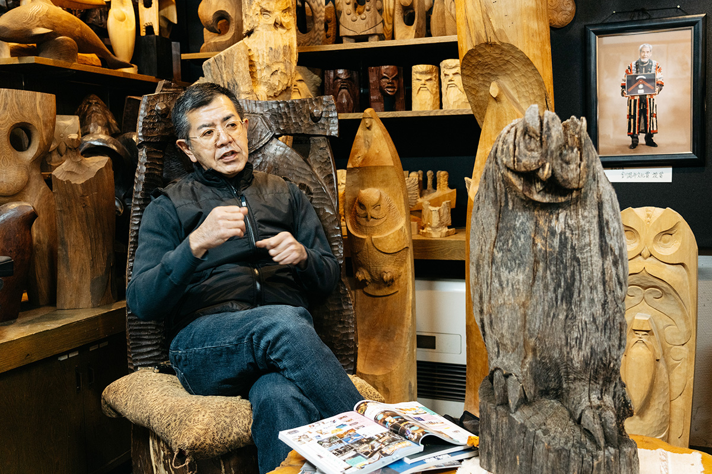
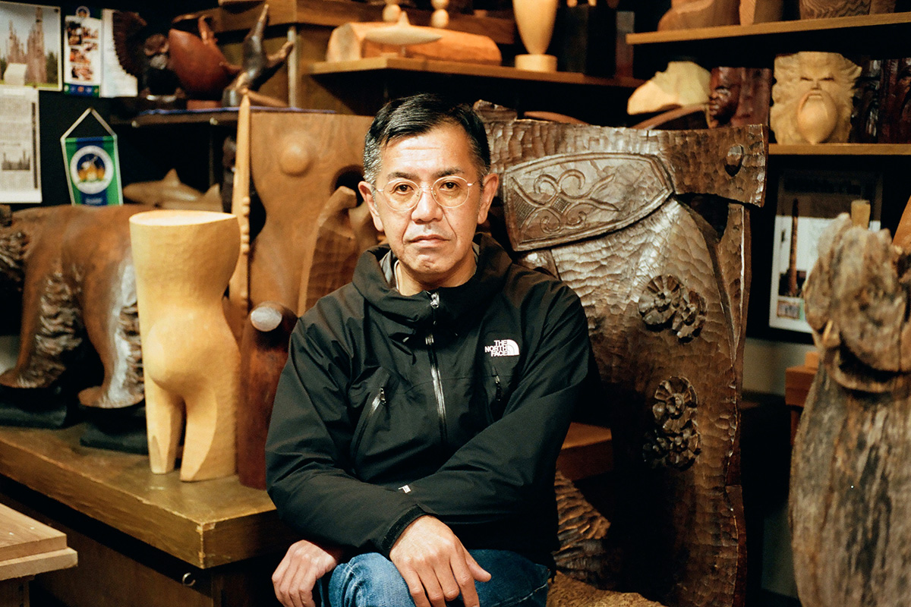
Его работа, по его словам, решать, что можно менять, а что нельзя. Напев песни и движения танца не меняются никогда. Для рекламных снимков спектакля из долины Нибутани взяли на время айнские халаты эпохи Мэйдзи, сами выделали обувь из лососёвой кожи и снимали посреди зимы на льду озера Акан.
«Юкар называют мифами и эпосом, а если проще, это сказки, которые сочинили айны. Я хочу через зрелище рассказать, зачем мы танцуем и поём»
режиссёр театра «Икор»
Он же продюсер фестиваля «Утаса», который каждую зиму проходит в деревне. Айнская музыка звучит там вместе с японской. В феврале 2020 года фестиваль ещё прошёл со зрителями, а в 2023 году публика вернулась на него впервые за три года. На сцену вместе выходили и молодёжь, и старики, а среди артистов была группа Tadekui, в которой играли айнские подростки. Зрители плакали, и казалось, что детей в этой деревне растит весь котан.
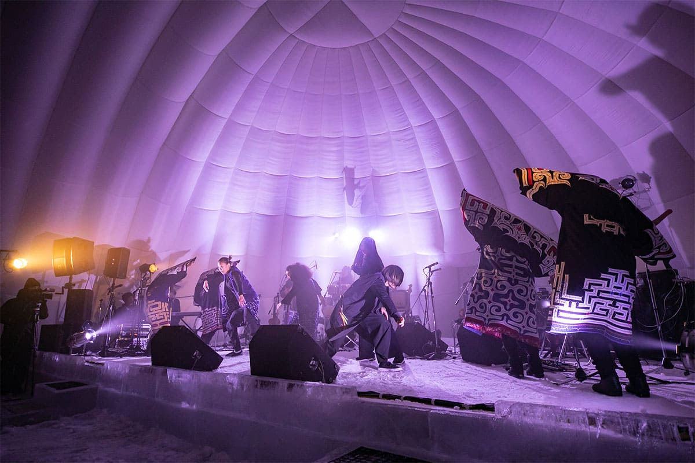
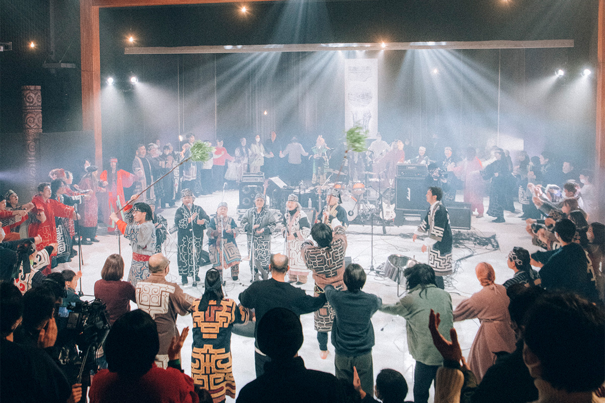
Театр «Икор»
- Адрес
- префектура Хоккайдо, Кусиро, Акан-тё, Аканко-онсэн, 5-2
- Телефон
- +81 154-67-2727
- Часы работы
- первый показ в 11:00, последний в 21:00 (зависит от сезона и дня недели)
- Выходные
- нерегулярно
- Цены / Вход
- Lost Kamuy: взрослые 2200 иен, младшие школьники 600 иен
- Сайт
- akanainu.jp
Серебро
KARIP: ювелир, которого позвал медведь
Ювелир, делающий серебро с айнскими мотивами, родился в 1975 году в Иокогаме. Его родители были родом с Хоккайдо, дома стояли айнские книжки с картинками и рельефы, а сам он с детства собирал народные ремёсла. Ещё подростком начал делать украшения, в 1998 году окончил ювелирную школу в Токио и пошёл работать в мастерскую.
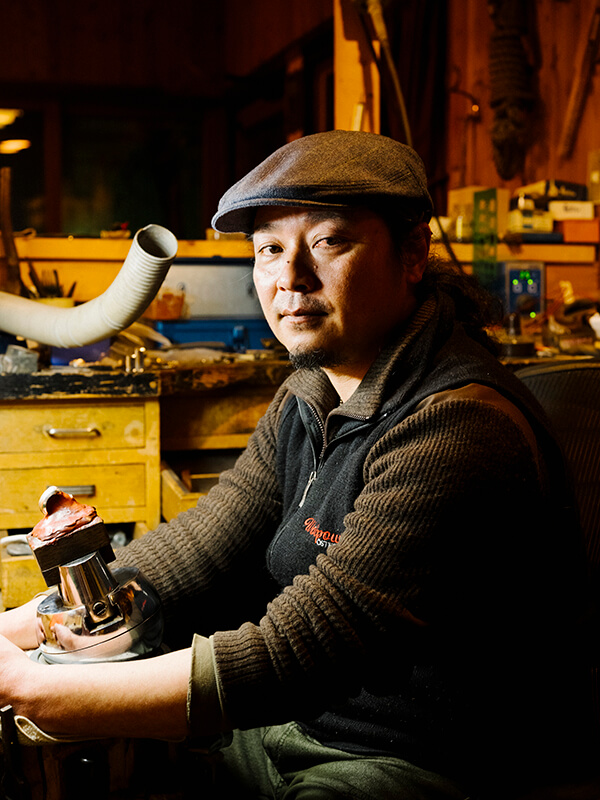
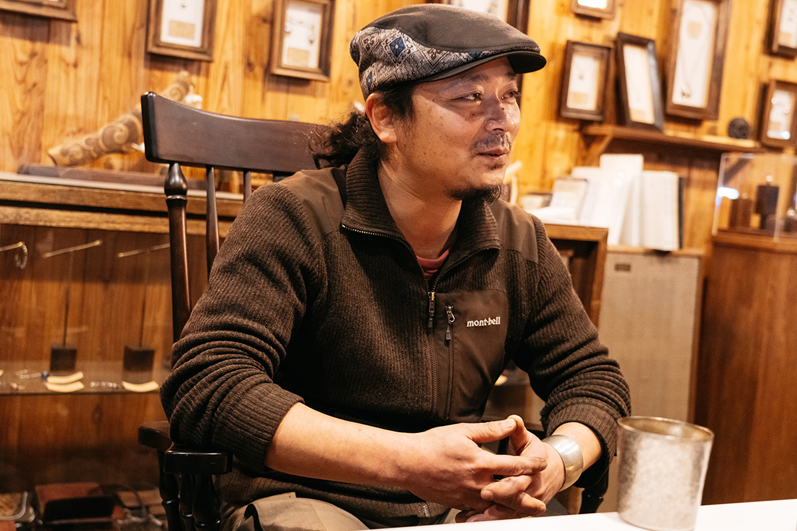
«В начале следующего года у меня как-то сама собой получилась вот эта вещь, кольцо с медведем. Наверное, повлияли резные медведи, которые я видел с детства»
ювелир, хозяин KARIP
В том же году он впервые попал на Акан. Колесил на мотоцикле по Хоккайдо, и друг посоветовал заехать к человеку, который режет медведей. Медведи Такэки Фудзито (1934–2018), резчика, которого на Акане называют суперзвездой, его потрясли.
«Я подумал: куда я попал? Здесь в одном месте собрались мастера, которые могут потягаться с целым миром»
ювелир, хозяин KARIP
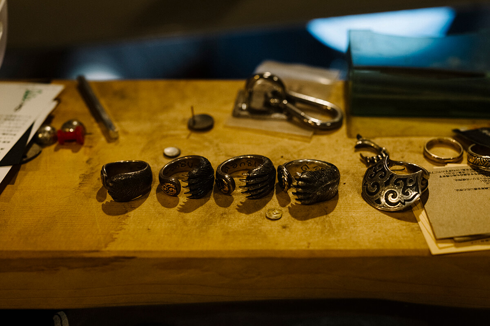
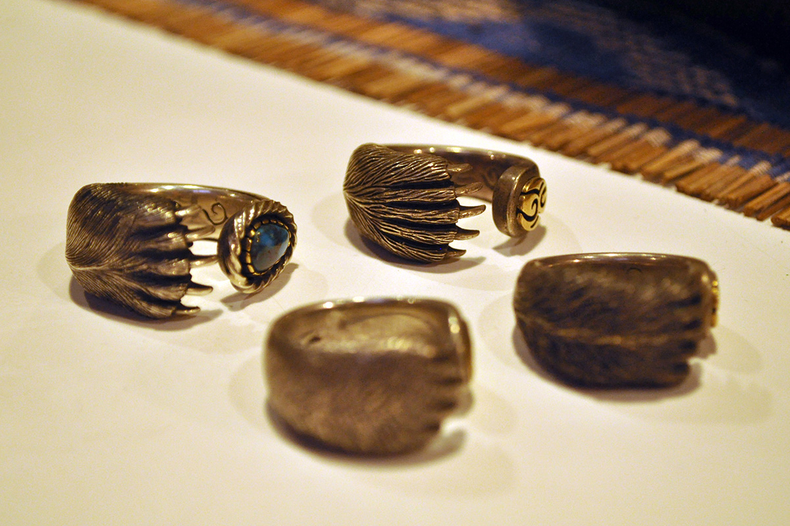
С 1999 года он работал как самостоятельный мастер и каждый год приезжал на Акан. Женился на уроженке Аканко, а в 2013 году переехал сюда и занял бывшую мастерскую её родственника, айнского резчика. В 2019 году в одном углу мастерской он открыл кафе и галерею KARIP. Кофе он обжаривает сам: захотелось пить на Акане вкусный кофе.
«Я долго не решался переехать: слишком сильно этим местом восхищался. Но переехал, и это было верное решение. Следы великих мастеров здесь всегда рядом, и природа замечательная»
ювелир, хозяин KARIP
Ответ на вопрос, почему он так увлечён украшениями, он нашёл в айнской культуре. Узор на айнской одежде и утвари никогда не служил тому, чтобы похвастаться властью. Он мягче и глубже, и он сживается с повседневностью.
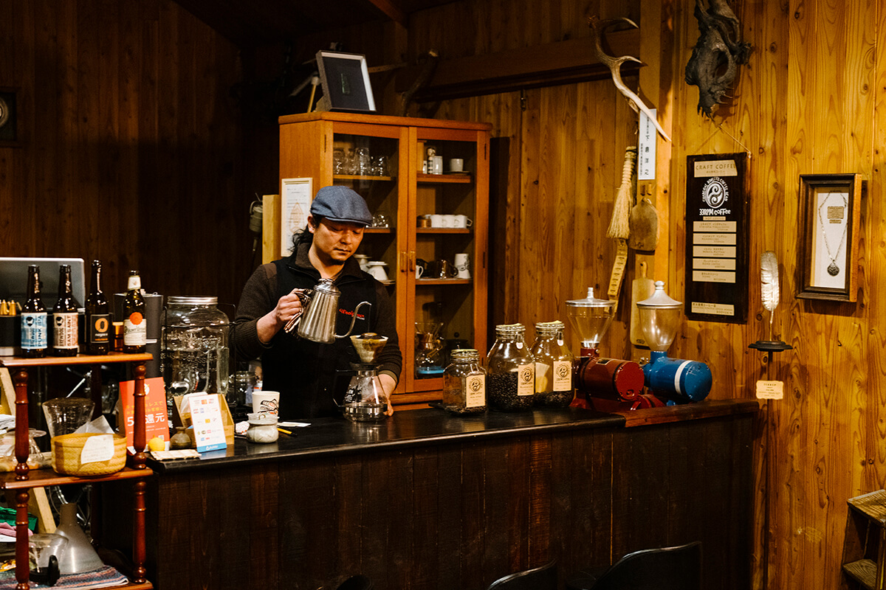
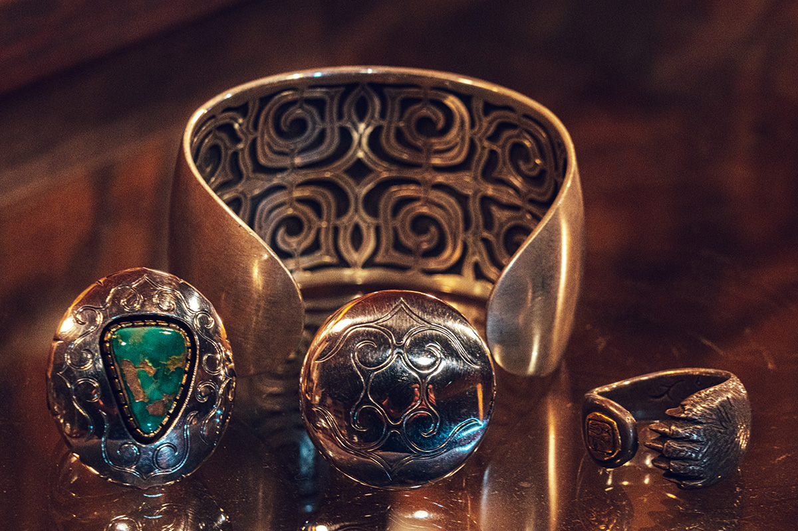
«Я делаю не традиционные вещи, это моё собственное творчество. Но, может быть, оно станет ещё одним подходом. Славно, если металл станет одной из опор аканского ремесла, рядом с резьбой и вышивкой»
ювелир, хозяин KARIP
KARIP
- Адрес
- префектура Хоккайдо, Кусиро, Акан-тё, Аканко-онсэн, 3-8-15
- Телефон
- +81 154-64-1728
- Часы работы
- 11:00–17:00
- Выходные
- понедельник, вторник
- Сайт
- karip.life
Песни
Сёстры, которые поют упопо и плетут из рогоза
В KARIP хозяйничает и жена ювелира. Она родилась в Аканко, училась в университете в Токио, а после землетрясения 2011 года вернулась домой. С младшей сестрой они поют айнские песни упопо в дуэте Kapiw & Apappo и выступают далеко за пределами Хоккайдо.
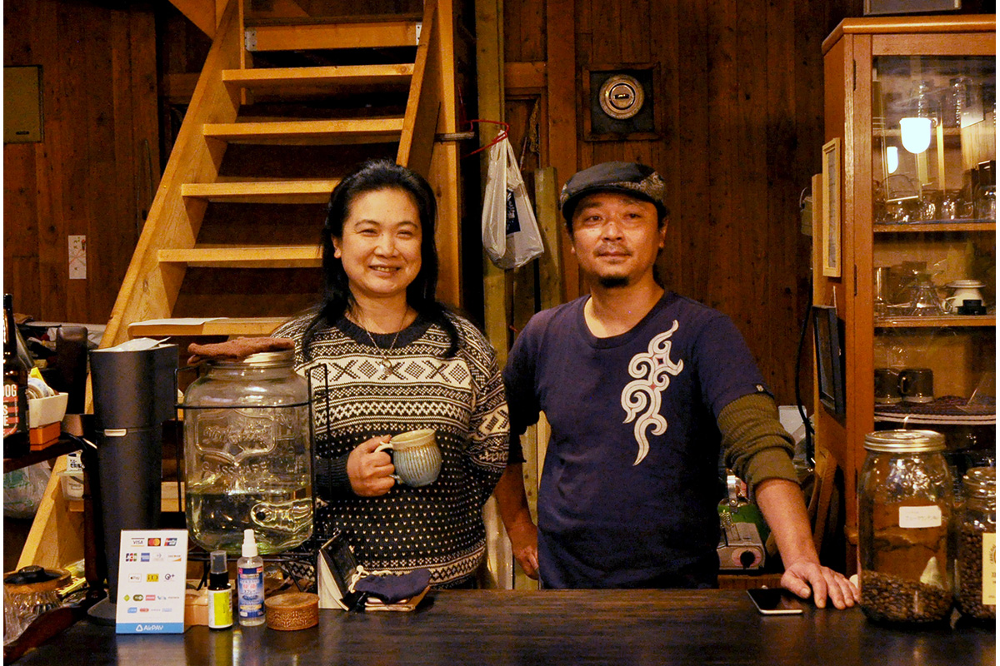
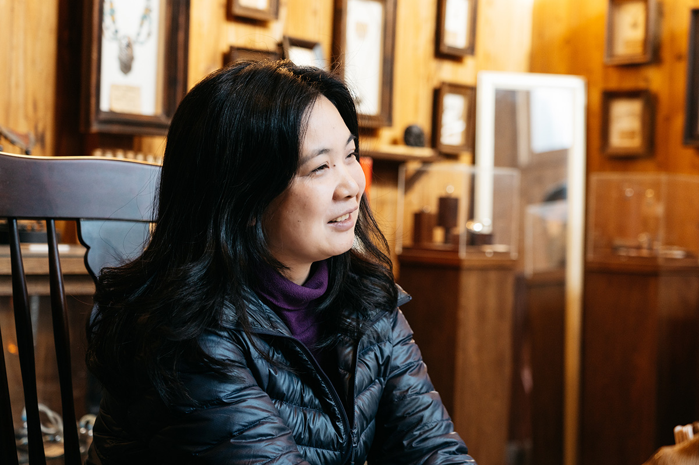
«Дети, которые здесь родились, учатся танцевать под упопо, которые поют старики. Для нас песня была домашним делом, петь на людях было непривычно. Упопо поют богам, и обращаться с ними легкомысленно нельзя»
певица из дуэта Kapiw & Apappo
«Главное для нас пейзаж песни. Если поёшь о пейзаже, представляешь его, если поёшь о камуй, поёшь камуй. На сцене у меня чувство, что я пою тем, кто стоит за спинами зрителей. У каждого из пришедших своя история и своя земля, на которой он жил. Нередко нам говорят, что наши песни звучат как что-то давно знакомое, и говорят люди, которые айнских песен никогда не слышали. Я и пою, чтобы понять, что это за отклик»
певица из дуэта Kapiw & Apappo
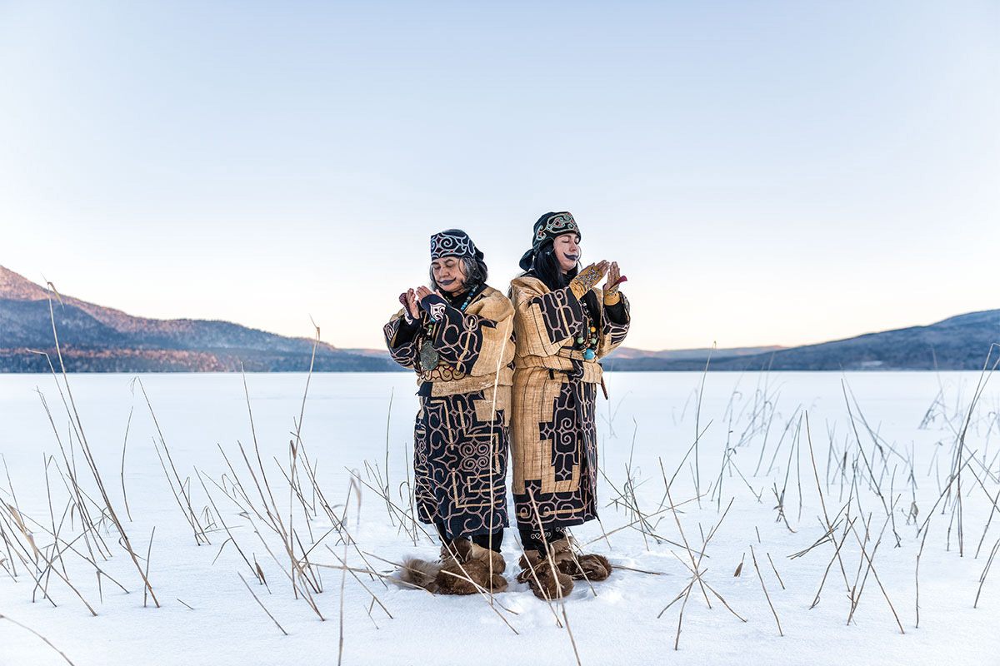
Она плетёт и вещи: корзины и подставки по мотивам айнских циновок. Рогоз, водяное растение, из которого айны плели циновки для обрядов, она сама собирает на болотах и у рек. Сухие стебли размачивают, расщепляют и только потом плетут, но они ломкие, и изгиб корзины даётся особенно трудно. К корзинам она пришивает ручки, а край обшивает берёстой, чтобы вещь была удобна в быту.
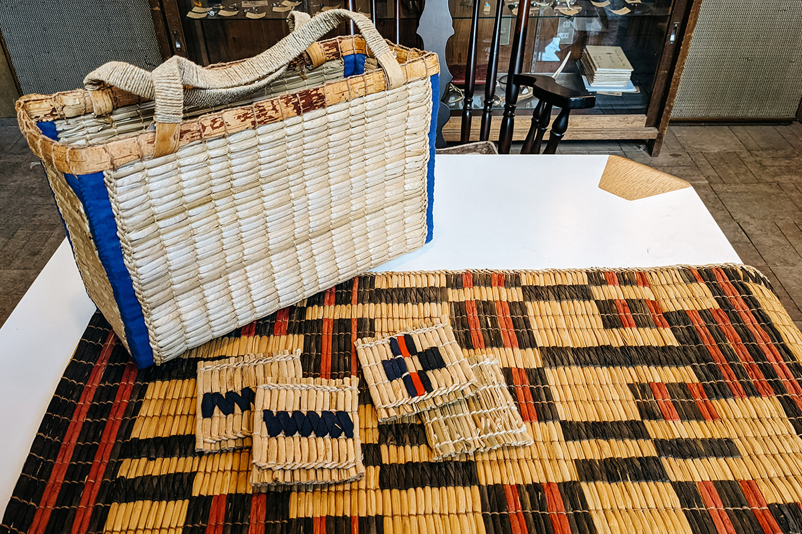
Младшая сестра делает браслеты по мотивам «эмусиат», перевязи для меча, которую мужчины носили на обрядах. Нить для них, как и в старину, она прядёт сама. С ильма снимают внутреннюю кору, счищают грубый внешний слой, вымачивают в горячем источнике или варят, разбирают на волокна и скручивают в нить. Этому её научила бабушка, которая освоила плетение перевязей. Сестра признаётся, что от такой работы порой начинают уставать глаза.
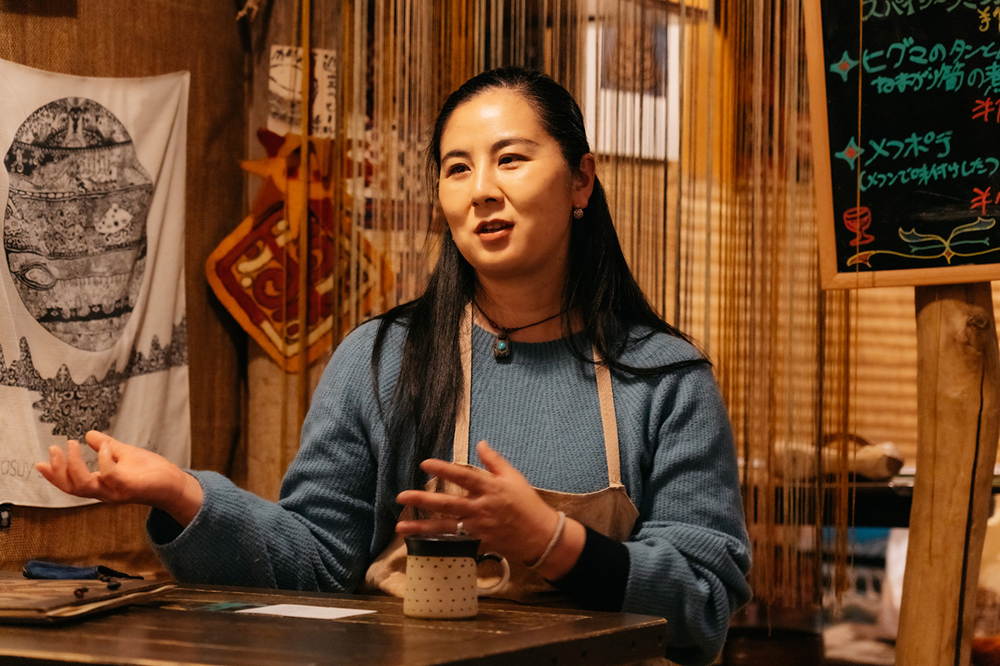
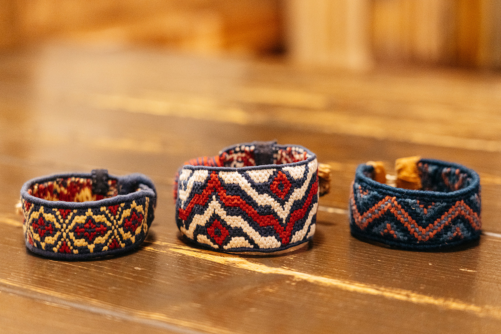
«Айны тонко чувствуют природу и движения души и умеют выразить их в ремесле, песне, сказке и танце. Украшения я делаю такие, какие хотела бы носить сама. Это и станет традицией, которая вышла из меня»
мастерица браслетов, хозяйка кафе «Поронно»
Кухня
«Поронно»: айнская еда по семейным рецептам
К 2021 году кафе «Поронно» работало уже больше сорока лет. Сначала мать хозяйки рядом с прилавком резьбы стала подавать напитки и айнские клёцки. Слух о них разошёлся среди мотоциклистов и путешественников, место для резьбы понемногу сжималось, и лавка сама собой превратилась в айнский ресторан. Его держат младшая из сестёр-певиц, её родители и муж, родом из префектуры Иватэ.
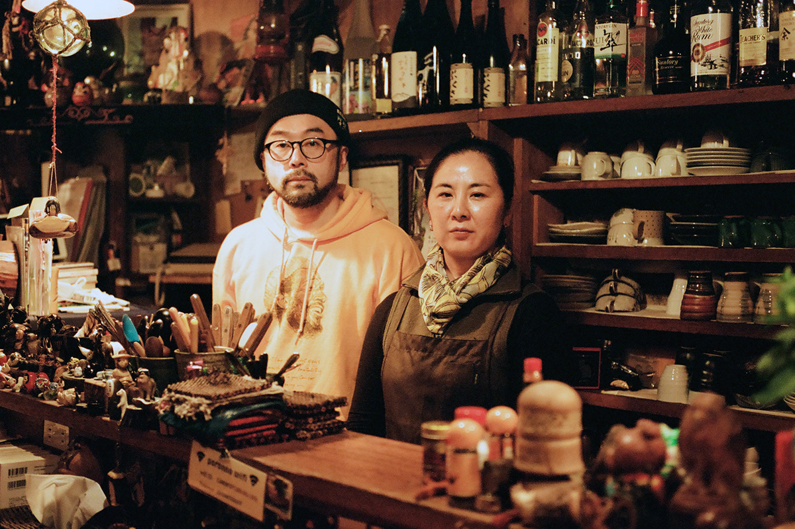
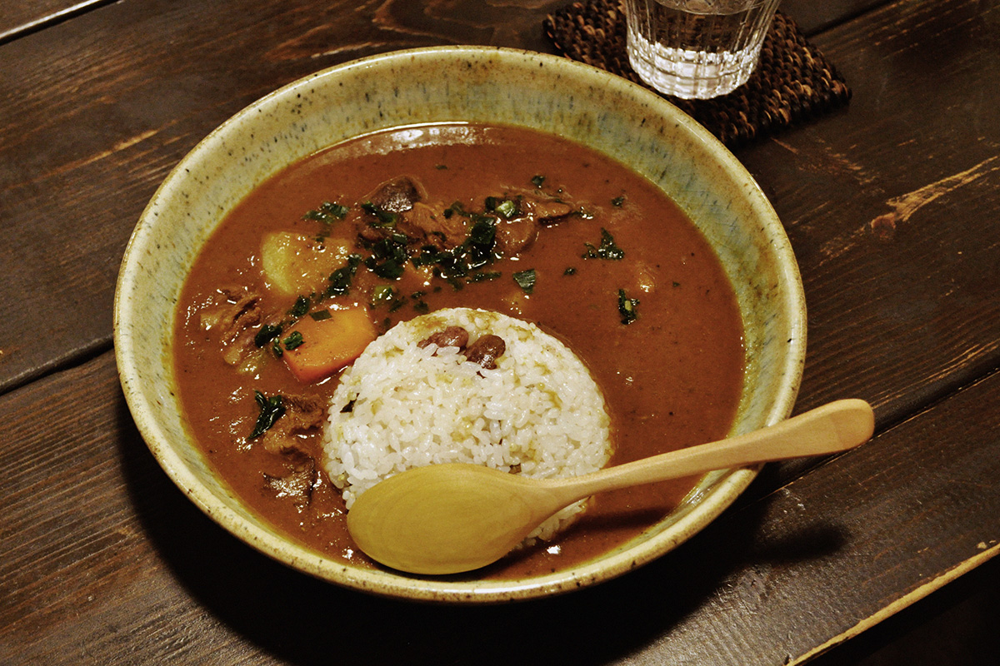
Муж готовит по рецептам, которые передавались в семье жены. По его словам, кухня айнов на побережье и в глубине острова разная, но везде строится на том, что можно добыть много и долго хранить: лосось и олень, просо и другие крупы вместо белого риса, ламинария, орехи, горные травы. После эпохи Мэйдзи в ход пошёл картофель. Айны считают, что мясо, рыбу, орехи и травы дают камуй, поэтому их используют целиком, без остатка.
«Охау, горячий суп, можно варить так же, как в эпоху Дзёмон, ничего не меняя. Мы стараемся не трогать семейные рецепты. Но делаем и своё: например, пиццу на тесте для традиционных клёцек»
повар кафе «Поронно»
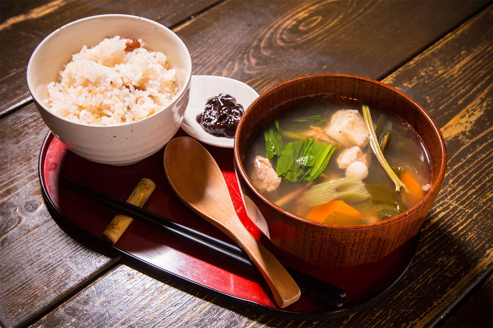
Лак
«Хикава»: чаша, которую надо повторить
В лавке «Хикава» в глубине зала прямо среди товара стоят старинные вещи семьи: сосуд для обрядов «синтоко» и чаши для сакэ «туки», когда-то полученные айнами в торговле. Увидеть старый японский лак в айнской лавке удаётся редко. Летом 2022 года сюда зашёл художник-мангака, бывший мастер японского лака, и хозяин, резчик, стал показывать ему свои сокровища.
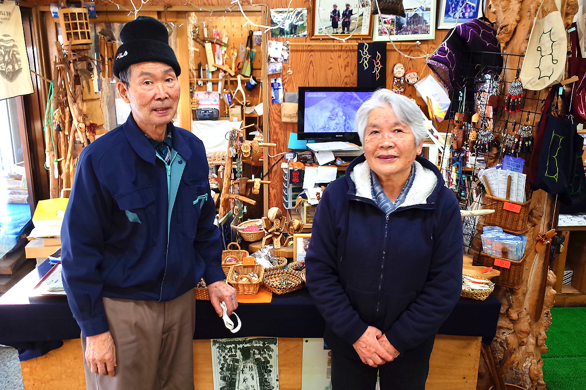
Осенью гость снова зашёл в лавку и рассказал, что когда-то работал с лаком. Хозяин показал на две чаши «туки» с золотым узором из вьющихся стеблей и попросил: эти чаши передавались в семье, и до смерти он хочет заказать их копию. Мастер по росписи золотом назвал цену высокой, и гость пришёл отказаться, но хозяин ответил, что понимает, сколько это стоит, и всё равно хочет заказ. В декабре гость заказал деревянную основу у знакомого токаря в префектуре Исикава. В феврале 2023 года основа ещё не была готова: дальше её несколько месяцев покрывают лаком, потом наносят золото, и лишь затем чаши вернутся на Акан.
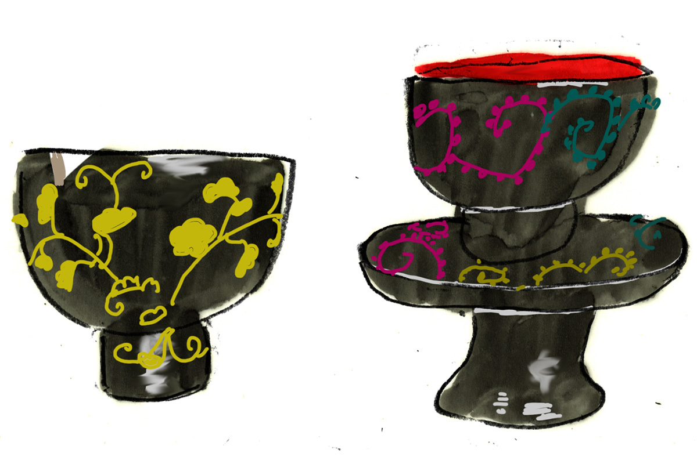
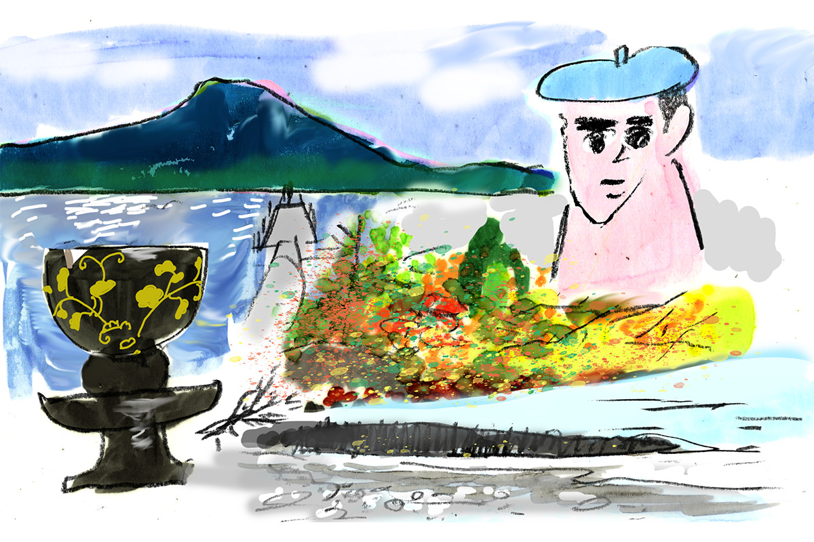
Прогулка
С айнским гидом по лесу и к Бокке
Айны собирали растения, разговаривая с природой, а узоры для резьбы и вышивки брали из неё же, думая о близких. Это отношение можно почувствовать на прогулке Anytime, Ainutime! с айнским гидом: по лесу, на берег озера или в мастерскую.
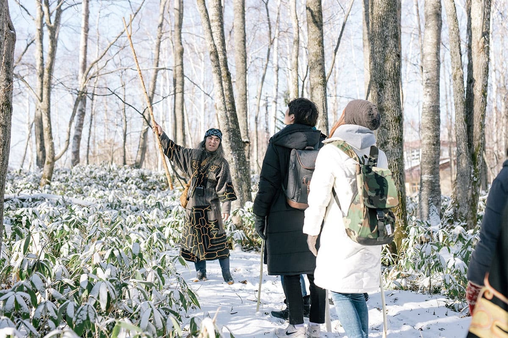
Недалеко от посёлка, на берегу озера, лежит Бокке, грязевой вулкан. Вокруг него от подземного тепла не держится снег, и это место считалось священным, а люди жили тут с эпохи Дзёмон. О природе Акана в разные сезоны рассказывает отдельная статья, а о празднике маримо в октябре ещё одна.
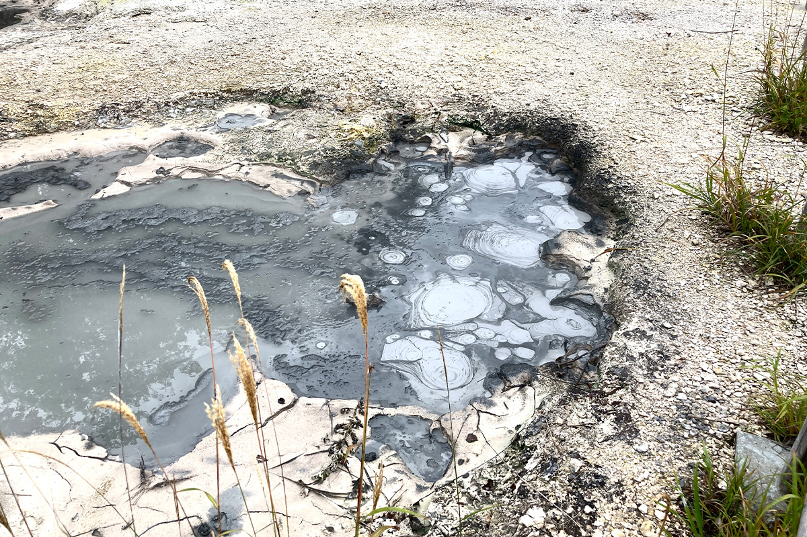
Фото: Масару Тацуки, Юити Ёкота, Юка Судзуки, Митихиро Хори, Юки Уэда, Рисэ Танака, Таро Мидзутани.